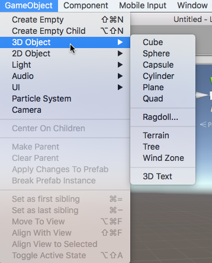
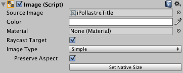
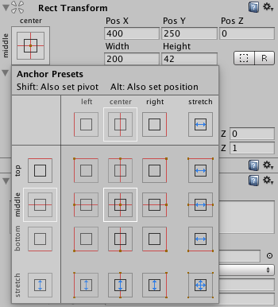
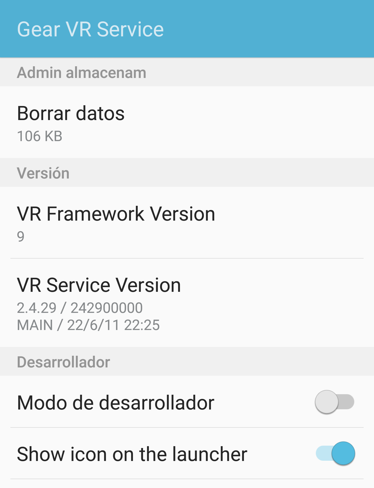
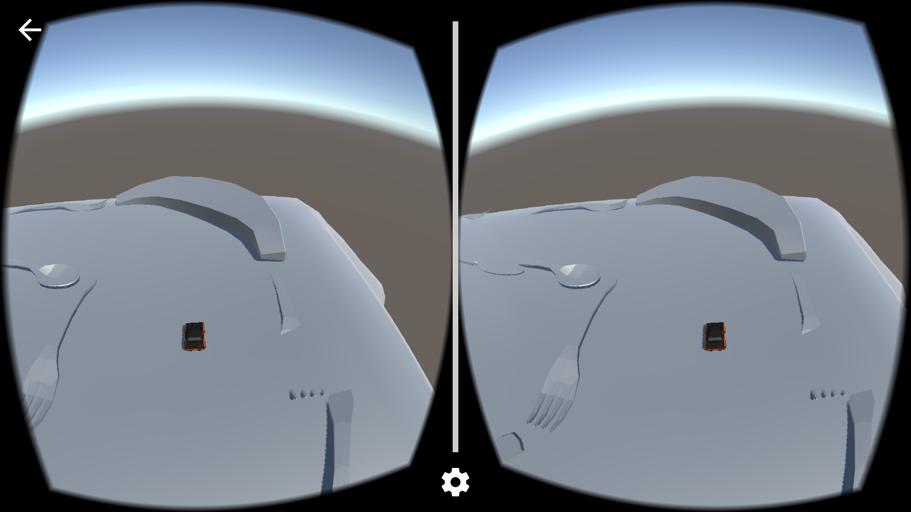

El motor Unity¶
Unity es un motor genérico para la creación de videojuegos 2D y 3D enfocado hacia el desarrollo casual. La curva de aprendizaje del motor es bastante suave, especialmente si lo comparamos con motores más complejos como Unreal Engine 4, y nos permitirá realizar un desarrollo rápido de videojuegos. Esta característica hace este motor muy apropiado también para crear rápidamente prototipos de nuestros juegos.
A partir de la versión Unity 5, existen dos ediciones: Personal y Profesional. La primera es gratuita e incluye todas las funcionalidades del motor. La segunda incluye funcionalidades adicionales de soporte construcción en la nube, herramientas de trabajo en equipo, etc, y es de pago suscripción de $75 o pago único de $1.500. La versión Personal podrá ser utilizada por cualquier individuo o empresa cuyas ganancias anuales no superen los $100.000.
Uno de los puntos fuertes de Unity es la posibilidad de exportar a gran cantidad de plataformas. Soporta las plataformas móviles iOS, Android, Windows Phone y Blackberry, y además también permite exportar a web WebGL, a videoconsolas PS4, PS3, PS Vita, Xbox One, Xbox 360, Wii U, etc y a ordenadores Mac, Windows y Linux.
Introducción a Unity¶
El editor de Unity¶
Unity incorpora su propia herramienta integrada para la creación de videojuegos, que nos permite incluso crear algunos videojuegos de forma visual sin la necesidad de programar.
Dentro del entorno del editor de Unity encontramos diferentes paneles, de los cuales destacamos los siguientes:
- Project: Encontramos aquí todos los recursos _assets_ que componen nuestro proyecto. Estos recursos pueden ser por ejemplo texturas, clips de audio, scripts, o escenas. Destacamos aquí el asset de tipo escena, que es el componente que nos permite definir cada estado pantalla del juego. Al hacer doble click sobre una escena se abrirá para trabajar con ella desde el editor.
- Hierarchy: La escena está formada por una serie de nodos _game objects_ organizados de forma jerárquica. En este panel vemos el árbol de objetos que contiene la escena abierta actualmente. Podemos seleccionar en ella cualquier objeto pulsando sobre su nombre.
- Scene: En este panel vemos de forma visual los elementos de la escena actual. Podremos movernos libremente por el espacio 3D de la escena para ubicar de forma correcta cada game object y tener una previsualización del escenario del juego.
- Inspector: Muestra las propiedades del game object o el asset seleccionado actualmente en el entorno.

Arquitectura Orientada a Componentes¶
Como hemos comentado, todos los elementos de la escena son objetos de tipo GameObject organizados de forma jerárquica. Todos los objetos son del mismo tipo, independientemente de la función que desempeñen en el juego. Lo que diferencia a unos de otros son los componentes que incorporen. Cada objeto podrá contener varios componentes, y estos componentes determinarán las funciones del objeto.
Por ejemplo, un objeto que incorpore un componente Camera será capaz de renderizar en pantalla lo que se vea en la escena desde su punto de vista. Si además incorpora un componente Light, emitirá luz que se proyectará sobre otros elementos de la escena, y si tiene un componente Renderer, tendrá un contenido gráfico que se renderizará dentro de la escena.
Esto es lo que se conoce como Arquitectura Basada en Componentes, que nos proporciona la ventaja de que las funcionalidades de los componentes se podrán reutilizar en diferentes tipos de entidades del juego. Es especialmente útil cuando tener un gran número de diferentes entidades en el juego, pero que comparten módulos de funcionalidad.
En Unity esta arquitectura se implementa mediante agregación. Si bien en todos los objetos de la escena son objetos que heredan de GameObject, éstos podrán contener un conjunto de componentes de distintos tipos Light, , Camera, , Renderer, etc, etc que determinarán el comportamiento del objeto.
En el inspector podremos ver la lista de componentes que incorpora el objeto seleccionado actualmente, y modificar sus propiedades:

En esta figura anterior podemos observar que el objeto GameObject que contiene la cámara del juego contiene los siguientes componentes:
Transform: Le da a la cámara una posición y orientación en la escena.Camara: Hace que se comporte como cámara. Capta lo que se ve en la escena desde su posición y lo renderiza en pantalla o en una textura.GUILayer: Permite introducir sobre la imagen renderizada elementos de la GUI etiquetas de texto, botones, etc.FlareLayer: Permite crear sobre la imagen renderizada un efecto de destello.AudioListener: Escucha lo que se oye en la escena desde la posición de la cámara y lo reproduce a través de los altavoces.
Podemos modificar los componentes, añadiendo o eliminando según nos convenga. Podemos eliminar un componente pulsando sobre su cabecera en el inspector con el botón derecho y seleccionando Remove Component. También podemos añadir componentes pulsando sobre el botón Add Component que encontramos en la parte inferior del inspector. Por ejemplo, podríamos añadir a la cámara un componente que haga que podamos moverla por el escenario pulsando determinadas teclas, o podríamos eliminar el componente Audio Listener para no escuchar por los altavoces lo que se oiga en el lugar de la cámara en su lugar podríamos optar por ponerle este componente a nuestro personaje, para reproducir lo que se oiga desde su posición en la escena.
La escena 3D¶
El el editor de Unity veremos la escena con la que estemos trabajando actualmente, tanto de forma visual _Scene_ como de forma jerárquica _Hierarchy_. Nos podremos mover por ella y podremos añadir diferentes tipos de objetos.
Añadir game objects a la escena¶
Podemos añadir a la escena nuevos game objects seleccionando en el menú la opción GameObject > Create Empty, lo cual creará un nuevo objeto vacío con un único componente Transform, al que le deberíamos añadir los componentes que necesitásemos, o bien podemos crear objetos ya predefinidos mediante GameObject > Create Other.
Entre los tipos de objetos predefinidos que nos permite crear, encontramos diferentes formas geométricas como Cube, Sphere, Capsule o Plane entre otras. Estas figuras pueden resultarnos de utilidad como objetos impostores en primeras versiones del juego en las que todavía no contamos con nuestros propios modelos gráficos. Por ejemplo, podríamos utilizar un cubo que de momento haga el papel de nuestro personaje hasta que contemos con su modelo 3D.

Si añadimos por ejemplo un GameObject de tipo Cube al seleccionarlo veremos sus propiedades en el inspector:

Como podemos ver, este tipo de objetos geométricos tienen los siguientes componentes:
Transform: Posición, rotación y escalado del objeto en la escena 3D.Renderer: Hace que el objeto se renderice en pantalla como una maya 3D. Con este componente conseguimos que el objeto tenga una representación gráfica dentro de la escena. En este caso se representa con la forma de un cubo, tal como podemos ver indicado en el componente Mesh Filter, pero podría ser otra forma geométrica, o cualquier maya que hayamos creado con alguna herramienta de modelado como Autodesk Maya, 3DS Max o Blender. También vemos que el Renderer lleva asociado un material, que se le aplicará a la maya al renderizarse. Podremos crear materiales e incluirlos como assets del proyecto, para así poderlos aplicar a las mayas.Collider: Hace que el objeto tenga una geometría de colisión, que nos permita detectar cuando colisiona con otros objetos de la escena. En este caso la geometría de colisión es de tipo caja _Box Collider_, para así ajustarse a la forma de la geometría de su representación gráfica.
Posicionamiento de los objetos en la escena¶
Todos los game objects incorporan al menos un componente Transform que nos permite situarlo en la escena, indicando su traslación, orientación y escala. Podremos introducir esta información en el editor, para así poder ajustar la posición del objeto de forma precisa.
También podemos mover un objeto de forma visual desde la vista Scene. Al seleccionar un objeto, bien en Scene o en Hierarchy, veremos sobre él en Scene una serie de ejes que nos indicarán que podemos moverlo. El tipo de ejes que se mostrarán dependerá del tipo de transformación que tengamos activa en la barra superior:

Las posibles transformaciones son:
- Traslación: Los ejes aparecerán como flechas y nos permitirán cambiar la posición del objeto.
- Rotación: Veremos tres círculos alrededor del objeto que nos pemtirán rotarlo alrededor de sus ejes x, y, z.
- Escalado: Veremos los ejes acabando en cajas, indicando que podemos escalar el objeto en x, y, z.
Si pinchamos sobre uno de los ejes y arrastramos, trasladaremos, rotaremos, o escalaremos el objeto sólo en dicha eje. Si pinchamos sobre el objeto, pero no sobre ninguno de los ejes, podremos trasladarlo, rotarlo y escalarlo en todos los ejes al mismo tiempo.
Jerarquía de objetos¶
Podremos organizar de forma jerárquica los objetos de la escena mediante la vista Hierarchy. Si arrastramos un game object sobre otro en esta vista, haremos que pase a ser su hijo en el árbol de la escena. Los objetos vacíos con un único componente Transform pueden sernos de gran utilidad para agrupar dentro de él varios objetos. De esta forma, moviendo el objeto padre podremos mover de forma conjunta todos los objetos que contiene. De esta forma estaremos creando objetos compuestos.
También resulta de utilidad dar nombre a los objetos de la escena, para poder identificarlos fácilmente. Si hacemos click sobre el nombre de un objeto en la vista Hierarchy podremos editarlo y darle un nombre significativo por ejemplo _Suelo_, _Pared_, _Enemigo_, etc.

Navegación en la escena¶
Además de podemos añadir objetos a la escena y moverlos a diferentes posiciones, deberemos poder movernos por la escena para posicionarnos en los puntos de vista que nos interesen para crear el contenido. Será importante conocer una serie de atajos de teclado para poder movernos con fluidez a través de la escena.
Encontramos tres tipos de movimientos básicos para movernos por la escena en el editor:
- Traslación lateral: Hacemos click sobre la escena y arrastramos el ratón.
- Giro: Pulsamos Alt + click y arrastramos el ratón para girar nuestro punto de vista.
- Avance: Pultamos Ctrl + click y arrastramos el ratón, o bien movemos la rueda del ratón para avanzar hacia delante o hace atrás en la dirección en la que estamos mirando.
Con los comandos anteriores podremos desplazarnos libremente sobre la escena, pero también es importante conocer otras forma más directas de movernos a la posición que nos interese:
- Ver un objeto: Si nos interesa ir rápidamente a un punto donde veamos de cerca un objeto concreto de la escena, podemos hacer doble click sobre dicho objeto en la vista Hierarchy.
- Alineación con un objeto: Alinea la vista de la escena con el objeto seleccionado. Es especialmente útil cuando se utiliza con la cámara, ya que veremos la escena tal como se estaría bien desde la camara. Para hacer esto, seleccionaremos el game object con el que nos queramos alinear y seleccionaremos la opción del menú GameObject > Align View To Selected.
Assets¶
Los Assets en Unity hacen referencia a cualquiero item que podemos utilizar en nuestro juego/aplicación. Un asset puede ser un fichero creado fuera de la plataforma Unity, por ejemplo un modelo 3D, un fichero de audio, o cualquier otro tipo de fichero que este soportado. También existen algunos tipos de assets que pueden ser creados desde Unity, por ejemplo el controlador de una animación, controlador de un jugador, mezclador de audio o el render de una textura.
Prefabs¶
Los prefabs son una colección de GameObjects y componentes predefinidos que se pueden reutilizar en nuestra aplicación. De esta forma, podemos crear un GameObject, añadir componentes y configurarlo con una serie de valores y posteriormente reutilizarlo en nuestra escena varias veces. Un prefab almcenará toda esta información y además a diferencia de copiar y pegar un GameObject existente en nuestra aplicación, si modificamos un prefab, el resto de prefabs en la escena también se modificarán propagando estos cambios. Al copiar y pegar un GameObject, los cambios que hagamos en el original no se propagan a la copia, por lo que cada instancia tiene sus propia configuración.
En el inspector de un prefab tenemos 3 botones que no estan presentes en un objeto normal: Select, Revert y Apply.
El botón "Select" selecciona el prefab original del cual esta instancia fue creada y por lo tanto nos permite modificar todas las instancias que existan en la escena. Sin embargo, también podemos sobreescribir estos cambios en una determinada instancia de un prefab utilizando el botón "Apply". Finalmente, podemos usar el botón "Revert" para revertir la configuración del prefab a los valores default valores del prefab original, antes de sobreescribir los cambios.
Los prefabs son la forma en que normalmente las librerías y SDKs tienen de ofrecer funcionalidades para Unity, por ejemplo ya veremos en la sección de realidad virtual o aumentada que utilizando Prefabs ya existentes podemos añadir estas funcionalidades a nuestra aplicación.
Paquetes de assets¶
Los paquetes de Assets nos permiten en unity fácilmente reutilizar projectos y colecciones de assets. De hecho como ya veremos, los Standard assets y los items que encontramos en la Asset store se descargan en forma de pquetes. Podemos importar estos paquetes bien haciendo doble click en el fichero que se genera o bien desde el menu Assets > Import package. Encontramos dos tipos de paquetes, los standard, que son colecciones ya disponibles por defecto al instalar Unity, y los paquetes personalizados que pueden ser creados por usuarios y descargarse online. De igual forma podemos exportar un paquete desde nuestro proyecto. Elige Assets > Export package... y nos aparecerá un diálogo para seleccionar los assets que queremos incluir en nuestro paquete. Deja marcado la casilla include dependencies para añadir automáticamente los assets utilizados por losque has seleccionado. Al hacer click en Export podremos seleccionar donde almacenar el paquete que contiene los assets previamente seleccionados.
Asset Store¶
Unity ha creado una tienda desde la que podemos descargar assets ya existentes. Estos assets pueden ser libres o comerciales, creados por la compañia Unity technologies o bien miembros de la comunidad. Podemos encontrar una gama muy variada de assets, que van desde texturas, modelos, animaciones, hasta proyectos completos, tutoriales y extensiones para el editor Unity. La tienda se puede acceder desde el propio entorno de Unity y los assets son descargados e instalados directamente en el proyecto que tengamos abierto. Los usuarios de Unity pueden publicar assets en la Asset Store y vender contenido que hayan creado.
Interfaz de usuario¶
El sistema con el que cuenta Unity para crear la interfaz de usuario se introdujo a partir de la versión 4.6. Se trata de un sistema bastante versátil, que utilizado de forma adecuada nos permite crear interfaces como por ejemplo los menús o el HUD del juego que se adapten a diferentes tamaños y formas de pantalla.
Todo el contenido de la interfaz de usuario estará contenido en nuestra escena dentro de un elemento tipo Canvas es decir, un game object que cuente con un componente Canvas. Dentro de él ubicaremos todos los componentes de la interfaz, como por ejemplo imágenes, etiquetas de texto o botones.
Canvas¶
El Canvas será el panel 2D _lienzo_ donde podremos crear el contenido de la interfaz de usuario. Los componentes de la interfaz siempre deberán estar dentro de un Canvas en la jerarquía de la de escena. Si intentamos arrastrar sobre la escena un componente de la UI sin un Canvas, el Canvas se creará de forma automática.

Una propiedad importante del componente Canvas es Render Mode, que podrá tomar 3 valores:
- Screen Space - Overlay: El
Canvasse dibuja sobre el contenido que aparece en pantalla, ajustándose siempre al tamaño de la misma. - Screen Space - Camera: Similar a la anterior, pero en este caso debemos vincularlo a una cámara, indicando la distancia a la que estará el
Canvasde la cámara seleccionada, y elCanvasse ajustará al tamaño que tenga el tronco de la cámara a dicha distancia. Se aplicarán sobre elCanvaslos parámetros de la cámara seleccionada. - World Space: En este caso el
Canvasse comportará como cualquier otro objeto 3D en la escena. Le daremos un tamaño fijo al panel y lo situaremos en una posición del mundo. Así podremos tener interfaces con las que podamos interactuar en nuestro mundo 3D.
En la previsualización de la escena, cuando tengamos un
Canvasde tipo Screen Space es posible que lo veamos de un tamaño mucho mayor que el resto de elementos de la escena. Esto se debe a que las unidades con las que trabaja internamente elCanvasson pixels en pantalla, mientras que es habitual que los elementos de la escena tengan dimensiones de alrededor de una unidad. Al ejecutar el juego no habrá ningún problema ya que elCanvasse ajustará al tamaño de la pantalla o de la cámara.
Elementos de la UI¶
Una vez contamos con un Canvas, podemos añadir dentro de él diferentes componentes de la interfaz. Encontramos diferentes tipos de componentes como etiquetas de texto, imágenes o botones que podremos incluir de forma sencilla.
Etiquetas de texto¶
Las etiquetas de texto serán objetos con un componente de tipo Text. Este componente nos permite indicar principalmente el texto a mostrar en la etiqueta, y también podemos especificar otras propiedades como la fuente, color, alineación o espaciado.
Es de especial interés la propiedad Best Fit. Con ella podemos especificar un tamaño máximo y mínimo de la fuente, de forma que se ajuste de forma automática entre estos valores al tamaño máximo que podamos tener sin que el texto se salga de su espacio. Es interesante cuando el texto puede ser variable por ejemplo diferentes idiomas y hay riesgo de que en algún caso quede demasiado largo y pudiera mostrarse truncado.

Imágenes¶
Las imágenes son objetos con un componente Image. En este componente deberemos introducir principalmente la textura o sprite a mostrar como imagen, que deberemos haber introducido previamente entre los assets del proyecto.
Utilizaremos preferiblemente imágenes de tipo PNG, y las podremos incluir como assets simplemente arrastrándolas sobre la sección Project del editor podemos organizarlas en carpetas.

Botones¶
Un botón es un objeto con un componente Button, que además contendrá como hijo un objeto de tipo Text para mostrar la etiqueta del botón se trata por separado el botón de su etiqueta. El botón tendrá una imagen que podremos mostrar como marco, y distintos colores con los que tintar el botón según el estado en el que se encuentre:
- Normal: Botón activo pero sin pulsar ni seleccionar.
- Highlighted: Botón activo y seleccionado para que se pueda pulsar. Este estado será útil cuando utilicemos un control mediante joystick o teclado: al pulsar los controles direccionales cambiaremos el botón seleccionado, y al pulsar la tecla de acción presionaremos el botón seleccionado actualmente.
- Pressed: Botón actualmente presionado.
- Disabled: Indica que el botón está deshabilitado y que no puede ser presionado.
Además en la parte inferior podremos conectar el evento On Click del botón con algún método de nuestro código, para que al pulsar sobre el botón se ejecute dicho método.

Posicionamiento en el espacio de la UI¶
Todos los elementos de la UI de Unity se posicionan mediante un componente de tipo RectTransform a diferencia del resto de objetos que tienen un componente Tranform.
La principal diferencia de RectTransform sobre Tranform es que nos permite indicar el área rectangular que ocupará el componente dentro del Canvas, además de las propiedades de posición, rotación y escala que tenemos en todos los objetos.

A la hora de definir el rectángulo que un componente de la UI ocupará en pantalla, lo primero que deberemos hacer es definir a qué posición de pantalla lo vamos a anclar es decir, qué posición de la pantalla tomaremos como referencia para posicionarlo. Si es un menú que queramos que aparezca centrado, lo deberemos anclar al centro de la pantalla, mientras que si es un marcador que queramos que aparezca en una esquina de la pantalla, lo conveniente será anclarlo a dicha esquina. Unity nos proporciona algunos valores predefinidos típicos para el anclaje _Anchor Presets_:

La posición del objeto será relativa siempre al punto de anclaje. Además, con la propiedad Pivot indicaremos el punto del objeto rectángulo que haremos coincidir con la posición especificada. El Pivot se indicará siempre en coordenadas normalizadas, entre 0,0 y 1,1. Con 0,0 indicamos la esquina inferior izquierda, con 1,1 la esquina superior derecha, y con 0.5,0.5 el centro del rectángulo.
Por ejemplo, si queremos situar un botón centrado en pantalla, utilizaremos como punto de anclaje el centro de la pantalla, como posición 0,0,0 para situarlo exactamente en el punto de anclaje, y como pivot 0.5,0.5 para que el botón aparezca centrado en dicho punto. A continuación vemos un ejemplo:

En caso de querer ubicar un marcador en la esquina superior derecha de la pantalla, en primer lugar deberemos establecer el anclaje en dicha esquina. Para que quede lo mejor ajustado posible es recomendable que el pivot en este caso sea 1,1, para que así lo que posicionemos sea la esquina superior derecha. De esta forma, si como posición indicamos 0,0,0 el objeto quedará perfectamente ajustado a la esquina. Podríamos modificar la posición si queremos darle un margen respecto a la esquina, pero de esta forma siempre quedará bien ajustado a la esquina y no se nos saldrá de pantalla. A continuación vemos un ejemplo:

Un caso algo más complejo es aquel en el que queremos que un elemento pueda estirarse. En este caso, en lugar de tener un ancla única, podemos establecer un ancla para cada esquina del objeto. Podemos ver sobre la imagen una serie de flechas blancas alrededor del título que definen los puntos de anclaje. Podemos arrastrar dichas flechas pulsando sobre ellas con el ratón para así modificar el anclaje:

Vemos que al tener este anclaje abierto en lugar de dar una posición x,y,z al objeto lo que debemos introducir son valores Left, Right, Top y Bottom. Aquí introduciremos la distancia que debe haber entre los límites del objeto y la zona de anclaje. La zona de anclaje será siempre relativa al tamaño del Canvas se estirará y se contraerá según la pantalla o ventana donde se ejecute el juego. De esta forma conseguimos que el rectángulo de nuestro componente se estire o se contraiga también según el espacio disponible, pudiendo hacer así por ejemplo que el título ocupe todo el espacio disponible.
Escalado del Canvas¶
Normalmente en nuestro Canvas encontraremos un componente adicional que es el CanvasScaler. Se trata de un elemento importante a la hora de conseguir interfaces adaptables, ya que nos permite personalizar la forma en la que se escala el contenido del Canvas a distintos tamaños de pantalla.
Podemos optar por tres modos:
- Constant Pixel Size: Los tamaños de los objetos de la interfaz se especifican en píxels. Si la pantalla tiene más densidad los objetos se verán más pequeños a no ser que los hagamos _estirables_ como hemos visto en el apartado anterior.
- Constant Physical Size: En este caso, a diferencia del anterior, los objetos siempre ocuparán el mismo espacio físico, independientemente de la densidad de pantalla. El posicionamiento y tamaño de los objetos se especifican en píxeles, pero para una determinada densidad de referencia indicada en dpi dentro del componente
CanvasScaler. Si la pantalla destino tiene una densidad diferente, todos los valores se actualizarán para que todo acabe teniendo las mismas dimensiones físicas en _cm_ reales. - Scale With Screen Size: Este último modo nos permite hacer que todo el contenido de la UI se escale según el tamaño de la pantalla destino. Diseñaremos la interfaz para un tamaño de pantalla en pixeles de referencia, indicado mediante una propiedad del componente
CanvasScaler. Si la pantalla tiene diferente ancho o alto, todos los valores se escalarán de forma proporcional. Podemos indicar si queremos que se escale sólo según el ancho, sólo según el alto, o según una mezcla de ambos.
El modo Constant Pixel Size será poco adecuado cuando estemos destinando el juego a pantallas que puedan tener diferente densidad, pero en caso de que no sea así nos permitirá ajustar mejor los contenidos de la interfaz por ejemplo en caso de PC o videoconsolas.
En caso de destinar nuestro juego a dispositivos móviles, lo recomendable será utilizar Constant Physical Size o Scale With Screen Size. La primera nos puede venir bien por ejemplo para menús, donde nos interese que siempre los botones tengan siempre el mismo tamaño suficiente para poder pulsar con el dedo sobre él, pero que no ocupe toda la pantalla en un dispositivos grande. Por otro lado, para elementos del HUD con los que no tenemos que interactuar nos puede venir bien la segunda opción, para así hacer que se escale según la pantalla y no ocupen demasiado espacio en dispositivos pequeños.
Realidad Virtual¶
Existen diferentes dispositivos de realidad virtual, que nos proporcionan una inmersión casi total en la escena, reflejando en la cámara los movimientos de nuestra cabeza, y proporcionando una visión estereoscópica de la escena. Entre los dispositivos más famosos se encuentran Oculus Rift, Samsung Gear VR y Google Cardboard. Aunque todos estos dispositivos proporcionan su propio SDK que podemos integrar en las plataformas nativas de desarrollo, es de especial interés su integración en el entorno Unity, que nos permitirá realizar aplicaciones que los soporten de forma casi inmediata. A continuación veremos cómo utilizarlos con este entorno.
Oculus Rift / Samsung Gear VR¶
A partir de Unity 5.1 encontramos en este entorno soporte nativo para los dispositivos Oculus Rift y Samsung Gear VR. Ambos utilizan el mismo SDK y herramientas, con la diferencia de que Oculus Rift funciona sobre plataformas de sobremesa, mientras que Samsung Gear VR funciona sobre móviles Samsung.
Para activar el soporte para estos dispositivos en Unity simplemente tendremos que entrar en Player Settings _Edit > Project Settings > Player_ y bien dentro de la plataforma Standalone para Oculus Rift o Android para Samsung Gear VR marcar la casilla Virtual Reality Supported, dentro de la sección Other Settings > Rendering.

Una vez hecho esto, automáticamente la cámara de la escena se comportará como una cámara VR, girando cuando giremos la cabeza y renderizando una imagen para cada ojo, para así proporcionar visión estéreo.
Despliegue de la aplicación en un dispositivo de prueba¶
Antes de desplegar la aplicación en un dispositivo de prueba, deberemos añadir una firma que nos deberá proporcionar Oculus para nuestro dispositivo concreto. Dicha firma sólo se necesitará durante el desarrollo, cuando la aplicación se publique ya no hará falta.
Para conseguir la firma en primer lugar necesitamos obtener el ID de nuestro dispositivo. Para ello lo conectaremos al sistema y ejecutaremos el comando:
adb devices
En la lista de dispositivos en la primera columna veremos los IDs que buscamos, con el siguiente formato:
* daemon started successfully *
1235ba5e7a311272 device
En este caso, el ID que buscamos sería 1235ba5e7a311272. Una vez localizado dicho ID, iremos a la siguiente página para solicitar la firma e introduciremos el ID necesitaremos registrarnos previamente como usuarios de Oculus Developer, si no tenemos cuenta todavía:
https://developer.oculus.com/osig/
Una vez introducido el ID nos descargará un fichero .osig que deberá ser introducido en nuestro proyecto de Unity en el siguiente directorio:
Assets/Plugins/Android/assets
Esto lo que hará será colocar dicho fichero en el directorio assets del proyecto Unity resultante. Una vez hecho esto ya podremos probar la aplicación en un dispositivo Samsung con Gear VR seleccionando la plataforma Android y pulsando sobre Build & Run.
Al desplegar la aplicación en el móvil Samsung, veremos que al ejecutarla nos pide conectar el dispositivo Gear VR al móvil. Una vez conectado, se ejecutará la aplicación y podremos ver nuestra escena de Unity de forma inmersiva.

Sin embargo, veremos que la imagen aparece algo distorsionada al verla a través de las lentes del Gear VR. Esto se debe a que aunque la cámara renderiza en estéreo y responde al movimiento de la cabeza, no se realiza la corrección adecuada a la imagen para verla a través de las lentes del Gear VR.
Utilidades de Oculus¶
Aunque la cámara de Unity puede ser utilizada para aplicaciones de VR, hemos visto que tiene algunas carencias como por ejemplo el no realizar una corrección de la distorsión que realiza la lente.

Para poder resolver estas carencias y tener la posibilidad de configurar e implementar diferentes componentes de la aplicación VR, Oculus proporciona una serie de utilidades en forma de paquete de assets para Unity que podemos descargar desde su web:
https://developer.oculus.com/downloads/
Desde esta página podremos bajar tanto versiones actualizadas del plugin de Oculus/Gear para Unity _OVR Plugin for Unity 5_ como las utilidades adicionales _Oculus Utilities for Unity 5_.
Para instalar el plugin simplemente tendremos que buscar dentro del directorio de instalación de Unity el directorio VR en caso de MacOS tendremos que mirar dentro del contenido del paquete Unity para localizar dicho directorio para localizar dicho directorio, y dentro de él sustituir el directorio oculus y todo su contenido por el proporcionado por el plugin.
Una vez actualizado el plugin podremos añadir las utilities cargándolo en el proyecto como paquete de assets.
Uno de los assets más útiles es el prefab OVRCameraRig. Podemos utilizarlo en la escena en lugar de la cámara de Unity, y nos permitirá configurar diferentes propiedades de la cámara en la escena 3D, como por ejemplo la distancia entre los ojos. Además, aplicará de forma correcta la corrección a la distorsión introducida por las lentes.

Modo de desarrollador¶
En los casos anteriores hemos probado la aplicación con el dispositivo Gear VR. Sin embargo, durante el desarrollo nos podría interesar poder probar la aplicación en el móvil sin la necesidad de tener que conectarlo al Gear VR.
Podemos conseguir esto activando el modo desarrollador de Gear VR en el dispositivo móvil Samsung. Para poder hacer esto antes deberemos haber instalado alguna aplicación nuestra con la firma osig, en caso contrario no nos permitirá activarlo.
Para activar el modo de desarrollador de Gear VR deberemos entra en Ajustes > Aplicaciones > Administrador de aplicaciones > Gear VR Service > Almacenamiento > Administrar almacenamiento y pulsar repetidas veces sobre VR Service Version. Tras hacer esto nos aparecerán opciones para activar el modo de desarrollador.

Con este modo activo podremos lanzar la aplicación en el móvil sin tener que conectar el dispositivo Gear VR, lo cual agilizará el desarrollo. Esta forma de probar la aplicación tendrá la limitación de que no reconocerá el giro de la cámara, ya que los sensores que utilizan estas aplicaciones para obtener la inclinación de la cabeza van integrados en el dispositivo Gear VR.
Google VR¶
Google VR, originalmente conocido como Google Cardboard es el SDK de Google para desarrollar aplicaciones de realidad virtual usando sus visores de VR. Hasta ahora principalmente el Google Cardboard, pero recientemente han lanzado el primer producto similar al anteriormente visto, Samsung Gear VR, conocido como Google Daydream. El SDK de Google VR es compatible con cualquiera de sus visores por lo que las aplicaciones que desarrollemos para el Google Cardboard se puede utilizar también en Google Daydream.
https://developers.google.com/vr/unity/
El plugin consiste en un paquete de assets que podemos incluir en nuestro proyecto deberemos añadir todo su contenido.
Recientemente ha aparecido una compilación personalizada de Unity que incorpora el SDK de Google VR de forma nativa. Esta compilación personalizada, que se basa en Unity 2017, es compatible el objetivo de compilación de Android con soporte para VR para Daydream y el Samsung Gear VR. Entre las características de GoogleVR para desarrollar aplicaciones encontramos el soporte para controladores, escenas de ejemplos, scripts con ciertas funciones ya implementadas, sonido espacial, etcétera.
A continuación vamos a ver la forma de añadir soporte a nuestro proyecto Unity para utilizar el visor de tipo Cardboard o similares. Al igual que con otros plugins o addons, se han creado una serie de prefabs que nos van a facilitar la tarea de hacer nuestro proyecto compatible. Lo primero que tenemos que hacer es configurar el proyecto para que soporte Realidad Virtual, o en su defecto generar un par de imágenes estéreo para cada ojo. Desde player setting, habilitaremos en la sección XR settings el soporte para Realidad virtual y el conjunto de SDKs a utilizar, en nuestro caso el de Cardboard.
Una vez configurado el proyecto, el primer prefab que tenemos que añadir es GvrEditorEmulator, este nos va permitir que al ejecutar nuestra escena se active el rendering estéreo, así como la emulación en el editor Unity del movimiento de la cabeza utilizando el teclado. En concreto, utilizaremos Alt + ratón para girar la cabeza y Ctrl + ratón para inclinarla. De igual manera, al hacer click con el ratón simularemos la pulsación del botón disponible en los visores tipo Cardboard. Gracias al uso de este prefab ya podremos utilizar la orientación de nuestra cabeza para ver la escena completo 360º. Además, Google VR SDK incluye un sistema de eventos para permitir que los desarrolladores creen aplicaciones con cierta capacidad de interacción con la escena. Este sistema es compatible tanto con Daydream como Cardboard. Para utilizarlo tendremos que añadir a nuestra escena el prefab GvrEventSystem. Una vez añadido este prefab podremos hacer uso en nuestra escena de un puntero para seleccionar objetos o interactuar con la escena. Dentro del SDK encontramos el prefab GvrReticlePointer que una vez añadido a nuestra escena, en concreto deberemos añadirlo a nuestra cámara principal, el sistema de puntero aparecera en nuestra escena una vez lo ejecutemos Cuando enfoquemos un objeto con el que se pueda interactuar el puntero generará una animación que podemos configurar y personalizar. Finalmente, el SDK cuenta con dos scripts para habilitar el sistema de interacción: GvrPointerGraphicRaycaster y GvrPointerPhysicsRaycaster . Estos scripts sustituyen a las versiones equivalentes de Unity para calcular la intersección de un rayo virtual lanzado Ray casting desde la cámara hacia la escena y hacia gráficos dibujados en un canvas 2D. Los scripts se encuentran en la siguiente ruta: Assets/GoogleVR/Scripts/EventSystem. Estos scripts se añadirán como componentes a la cámara principal para que funcionen correctamente. Además, cada objeto de la escena con el que queramos interactuar debe responder a los eventos generados, para ello bien podemos utilizar el componente EventTrigger o el sistema de eventos de Unity mediante scripts que desarrollemos y añadamos a los objetos. En el caso de la interacción con modelos 3D a través del script GvrPointerGraphicRaycaster es necesario que los modelos tengan una componente collider, permitiendo así que el_ raycaster_ pueda detectar la colisión con el modelo 3D.
La jerarquía de objetos en la escena quedaría como se muestra en la siguiente imagen:
En la siguiente imagen podemos ver la previsualización de la cámara en la escena, en las últimas versiones del SDK se ha deshabilitado el rendering previo de las dos vistas estéreo. Se puede apreciar como al enfocar el objeto flotante, el puntero produce una animación, en este caso formando un circulo que se expande y se contrae. De esta forma podemos facilmente identificar los objetos de la escena con los que se puede interactuar.

Con esto tendríamos la funcionalidad básica para convertir nuestra escena en Unity en una experiencia de realidad virtual. El SDK está en contínuo desarrollo por lo que su API sufre cambios de forma frecuente. Para implementar otra de las características claves en una experiencia de realidad virtual, el sonido espacial, podemos también utilizar el SDK de GoogleVR. Este incluye toda la funcionalidad necesaria para dotar a nuestra escena de sonido espacial e immersivo. Podemos consultar una guía sobre su utilización en Unity en el siguiente enlace: https://developers.google.com/vr/unity/spatial-audio.
Guía uso Google VR SDK v0.6 e inferiores Versión SDK anterior, no recomendado utilizarse, solo para mantenimiento de proyectos existentes, legacy
La forma más sencilla de añadir soporte a nuestro proyecto Unity para Cardboard o similares es añadir a nuestro proyecto el prefab GvrViewerMain. Este prefab tiene los componentes necesarios de forma que al ejecutar nuestra aplicación se generarán las imágenes estéreo utilizando nuestra cámara principal de la escena.
Desde este prefab podemos ajustar la distorsión de las lentes, así como seleccionar el tamaño de la pantalla sobre el que la aplicación se va a ejecutar. Por ahora, además nos permite seleccionar que versión de Google Cardboard vamos a utilizar, de forma que se generarán las vistas correspondientes para el visor seleccionado distorsión.

Además, el SDK de Google para Unity cuenta con otros prefabs que nos permiten facilmente utilizar el movimiento de la cabeza para interactuar con nuestra escena. Usando el prefab GvrReticle podemos implementar esta funcionalidad en nuestra aplicación. También incorpora otras utilidades como un prefab para mostrar una etiqueta flotante en nuestra aplicación con la tasa de imágenes por segundo a la que la aplicación esta siendo ejecutada: GvrFPSCanvas. Esto es importante ya que en las aplicaciones de Realidad Virtual es necesario maximizar la tasa de imágenes por segundo de forma que el usuario no sienta sensación de mareo o perciba y que el movimiento de la cámara alrededor de la escena sea lo más suave posible.
Para integrar el GvrReticle a nuestra aplicación y habilitar la interacción con modelos de la escena tendremos que seguir los siguientes pasos. Primero, añadimos el prefab GvrReticle y los ponemos en la jerarquía de nuestra aplicación debajo de la cámara principal. Desde el inspector del prefab podremos cambiar algunos ajustes como el color del puntero, la forma, o la animación que se produce al apuntar a un objecto de nuestra escena con el que se puede interactuar. Además, tenemos que añadir a nuestra escena un objeto EventSystem y añadir la componente Gaze Input Module. Por último, añadiremos el objeto con el que vamos a interactuar, por ejempo un cubo, y nos aseguraremos que tiene habilitada la componente Box Collider. De esta forma nuestra aplicación en Unity podrá comprobar cuando el puntero intersecta con el cubo 3D. También tenemos que añadir a nuestra cámara principal la componente Physics Raycaster (Script), de forma que nuestra cámara podrá detectar colisiones con los objetos de la escena mediante raycasting.
Realidad Aumentada¶
Realidad aumentada es la expresión que usamos para referirnos a las tecnologías que nos permiten superponer modelos virtuales en el mundo real. La mayor diferencia con el término realidad virtual es que la realidad aumentada mezcla el mundo virtual y el real, mientras que en la realidad virtual no percibimos el mundo real y estamos immersos en un mundo virtual no hay percepción del entorno en el que estamos.
Si pensamos en la expresión "realidad aumentada" aplicada a dispositivos móviles, se traduce a la capacidad de superponer contenido en el mundo real a través de la cámara del dispositivo. Esto nos permite "mejorar" el mundo real superponiendo información o contenido multimedia. Por ejemplo, apuntar con la cámara de nuestro teléfono a una foto y que nos muestre una ventana 3D a través de la pantalla de nuestro teléfono donde podemos reproducir un vídeo. Cientos de aplicaciones relacionadas se estan utilizando en museos de todo el mundo para mostrar información tridimensional y aportar información adicional de objetos que se exhiben en los museos. Gracias a las pantallas táctiles de nuestros teléfonos, la realidad aumentada también nos proporciona cierta capaz de interacción entre el contenido virtual y el mundo real.
Actualmente la mayoría de tecnologías que permiten "aumentar la realidad" utilizan marcadores con una forma conocida a priori, plano, cubo, cilindro, etcétera, de forma que el software utilizado es capaz de detectar dicho marcador y mostrar el contenido alrededor del mismo. Pese a que la mayoría utilizan marcadores, cabe destacar que en los últimos años con la aparición de sensores 3D como el dispositivo Kinect de Microsoft, la utilización de marcadores se ha reducido, ya que tenemos información geométrica del entorno mundo real y por lo tanto podemos superponer información 3D de forma precisa. Debido a que la mayoría de dispositivos móviles no disponen de sensores 3D, la mayoría de tecnologías para "aumentar la realidad" en estos dispositivos se basan en la utilización de marcadores. En él ultimo año, han aparecido varios dispositivos móviles con capacidad de aumentar la realidad, el primero de ellos es un proyecto de la empresa Google, conocido como project Tango, el cual propone un disposito móvil con cámara 3D capaz de mapear el entorno y superponer contenido. El otro proyecto a destacar ha sido desarrollado por la empresa Microsoft y se llama HoloLens. Este es un casco de realidad aumentada o realidad mixta como ellos lo denominan. Este dispositivo móvil es capaz de mapear el entorno y visualizar contenido tridimensional en nuestro entorno como si de verdad estuviera ahí.
Por último mencionar que existen otras tecnologías de realidad virtual basadas en posicionamiento GPS, de forma que utilizando las coordenadas proporcionadas por un sistema GPS habilitan en ciertos lugares la visualización de cierta información adicional utilizando la cámara del dispositivo móvil.

Librerías de realidad aumentada¶
Actualmente existen varias librerías de realidad aumentada que nos permiten desarrollar aplicaciones para smartphones, tablets e incluso gafas de realidad aumentada. A continuación vamos a revisar las características de algunas de estas librerías.
DroidAR¶
DroidAR es una librería open-source para Android que nos ofrece funcionalidades de realidad aumentada mediante la detección de puntos de interés basada en localización GPS así como la detección de marcadores. Mediante el uso de la librería libGLX además permite cargar modelos 3D y animaciones para visualizar mediante marcadores o la localización del dispositivo. Destacar que la documentación de esta librería no es demasiado extensa y no aporta mucha información útil. En los últimos dos años no se ha actualizado mucho, de hecho basado en DroidAR ha aparecido la librería DroidAR 2 de código cerrado que ofrece nuevas y mejoradas funcionalidades respecto al proyecto original.
Vuforia¶
Vuforia es otra librería de realidad aumentada desarrollada por la empresa Qualcomm. En 2015 Qualcomm vendió la plataforma a otra empresa estadounidense que ha continuado desarrollando la misma. Vuforia proporciona múltiples formas de ofrecer realidad aumentada a través de marcadores 2D/3D, múltiple detección de marcadores de forma simultánea, posicionamiento, etcétera. Vuforia ofrece soporte para las plataformas iOS y Android de forma nativa, a su vez ofrece un plugin para Unity de forma que podemos desarrollar nuestra aplicación de realidad aumentada en Unity y posteriormente desplegarla en aplicaciones de Escritorio, MACOSX, Windows 10, Android e iOS. Además ofrece soporte para otros dispositivos móviles, como las gafas de realidad aumentada de EPSON Epson Moverio BT-200, gafas de realidad virtual Samsung GearVR e incluso recientemente han dado soporte para el dispositivo de realidad aumentada Microsoft HoloLens. Vuforia ofrece licencias para desarrollar proyectos personales sin fines comerciales, de forma que podemos crear facilmente apps con funcionalidades de realidad aumentada. Si queremos comercializar nuestra app tendremos que adquirir una licencia.
Wikitude AR¶
Wikitude AR es una librería comercial ofrece período de prueba de realidad aumentada. Permite el reconocimiento de imagenes y seguimiento de las mismas, así como visualización de modelos 3D y animaciones. También ofrece detección basada en la geolocalización del dispositivo. Wikitude AR SDK esta disponible para Android, iOS, Unity, Google Glass, Epson Moverio, Vuzix M-100, plugin para la librería PhoneGap y también un componente de Xamarin.
Desarrollando una aplicación de Realidad aumentada con Vuforia¶
En este curso vamos a centrarnos en la librería Vuforia, ya que además de ofrecer compatibilidad con múltiples plataformas, su integración con Unity es muy sencilla y nos permite facilmente crear aplicaciones de realidad aumentada. Además, dispone de licencias personales que podemos utilizar sin restricciones para el desarrollo de nuestras aplicaciones.
Lo primero que tenemos que hacer para empezar el desarrollo de una aplicación de realidad aumenta con Vuforia es registrarnos en su página web [https://developer.vuforia.com/](https://developer.vuforia.com/).

Una vez registrados recibiremos un correo electrónico para confirmar la cuenta que acabamos de crear. Al identificarnos en el portal de la plataforma veremos varias secciones. Primero debemos ir a la sección "Downloads" para descargar el SDK. En esta sección podemos ver una descripción de las distintas características que el SDK de Vuforia nos ofrece, así como las distintas version para múltiples plataformas. En nuestro caso vamos a descargar la versión para Unity. Al descargar el SDK para Unity nos encontramos un paquete que podemos importar en nuestro proyecto mediante la opción de Unity "import package" o bien simplemente hacer doble click sobre el fichero y se importara en el proyecto que tengamos abierto en ese momento. A continuación mostramos las características que ofrece el SDK de Vuforia.
- Image Targets: Detección y seguimiento de marcadores 2D.
- VuMark: VuMark es un marcador propio de Vuforia al estilo de códigos QR o similares. La ventaja es que el tracking es más robusto y estable en comparación a utilizar Image Targets.
- Object Recognition: Utilización de marcadores 3D: cubos, esferas, cilindros, como objeto a detectar para superponer contenido.
- Multi Targets: Detección de múltiples marcadores de forma simultáena permitiendo detectar y seguir varios modelos de forma independiente.
- User Defined Targets: Permite crear marcadores 2D personalizados basados en imágenes que el usuario puede subir a la plataforma.
- Smart Terrain Unity only: Permite crear fácilmente escenarios con múltiples marcadores para ofrecer experiencias de realidad aumentada muy vistosas. Esta enfocado a la creación de videojuegos y permite crear fácilmente distintos niveles dentro de nuestro juego o aplicación.
- Cloud Recognition: Permite almacenar los marcadores en la nube de forma que no tienen que almacenarse en el dispositivo móvil.
- Text Recognition: Utilización de texto como marcador.
- Frame Markers: Utilización de marcadores 2D convencionales también conocidos como marcadores fiduciales. Cada marcador codifica un patrón binario que corresponde a un identificador único.
Una vez descargado el SDK e importado en Unity, podemos añadir una cámara de Realidad Aumentada a la escena, de forma que cuando usemos este objeto nos va a permitir detectar y hacer el seguimiento de los marcadores.
Creamos un nuevo proyecto, hacemos doble click sobre el SDK que hemos descargado previamente y a continuación aceptamos que se importe el SDK en el proyecto que acabamos de crear.


Una vez importamos el SDK dispondremos de una carpeta con el nombre "Vuforia" dentro de los Assets de nuestro proyecto. Esta carpeta contiene una serie de objetos que podemos añadir a nuestra escena. Entre estos objetos encontramos la cámara de realidad virtual que mencionamos anteriormente. Lo primero que tenemos que hacer para habilitar la funcionalidad de realidad aumentada en nuestra aplicación es eliminar la cámara principal que se crea en la escena por defecto al crear un proyecto. Una vez eliminada, hacemos click sobre la carpeta "Vuforia" y nos digirimos a la subcarpeta "Prefabs". Esta carpeta contiene el objeto "ARCamera" que podemos arrastar en nuestra escena. Una vez disponemos de este objeto en nuestra escena vamos a ver que componentes tiene, para ello hacemos click sobre el objeto en la vista que nos muestra de forma jerárquica los objetos en la escena.
Vamos a ver los distintos componentes que tiene asociados el objeto "ARCamera" y sobretodo vamos a ver las distintas opciones que nos ofrece el componente "Vuforia Behaviour". Podemos ver que por defecto, la mayoría de componentes se encuentran activados, permitiendo la inicialización del objeto, cargar una base de datos con marcadores, mostrar vídeo de fondo obtenido a través de la cámara del dispositivo o habilitar la característica "Smart terrain" de la librería Vuforia.
Por ahora vamos a centrarnos en el componente "Vuforia Behaviour", podemos ver que en el primer campo o propiedad tiene un campo para introducir una licencia de aplicación. De hecho, si intentamos ejecutar la aplicación sin introducir esta licencia, obtendremos un mensaje de aviso alertándonos de la necesidad de introducir una licencia válida para poder utilizar la cámara de realidad aumentada en nuestra escena. Por ello, antes de continuar tendremos que ir a la plataforma online de Vuforia y obtener una clave para nuestra aplicación.
En la pestaña developer de la plataforma online veremos que tenemos disponible una subsección llamada "License Manager", desde esta podemos crear una nueva licencia para nuestra aplicación, tan solo deberemos seguir los siguientes pasos:
-
Elige un tipo de proyecto: Dependiendo del tipo de aplicación: Development, Consumer o Enterprise tendremos que pagar por nuestra licencia o no. En nuestro caso seleccionaremos el tipo "Development"
-
Definimos un nombre para nuestra app: como la plataforma nos permite crear múltiples apps es importante poner un nombre identificativo de forma que más tarde podamos relacionar las licencias con las apps que estamos desarrollando.
-
Seleccionamos el tipo de dispositivo: en este caso tan solo tendremos que diferenciar entre disposito móvil o "eyewear". Dentro de "eyewear" engloban dispositivos como las Microsoft Hololens, EPSON moverio, etcétera.
-
Obtenemos nuestra licencia: En el caso de que se trate de una licencia comercial tendremos que proveer con un medio de pago para costear la misma, en caso contrario veremos que nuestra licencia se acaba de crear. La licencia de desarrollar tiene algunas restricciones, por ejemplo el número máximo de veces por mes que un marcador puede ser detectado usando nuestra aplicación móvil. Para saltarnos esta restricción tendremos que obtener una licencia comercial.
Una vez creada, nos aparecerá en el gestor de licencias de la plataforma online y podemos hacer click sobre la misma para ver la cadena de texto que representa la licencia de nuestra aplicación. Esta cadena se debe de introducir en el campos que vimos anteriormente del componente "Vuforia Behaviour" en objeto "ARCamera".
Trás introducir la licencia veremos que podemos ejecutar nuestra aplicación en Unity y si nuestro ordenador dispone de una cámara compatible podremos ver video en directo en la escena Unity.
Lo siguiente que tenemos que hacer es habilitar el uso de marcadores y definir el marcador que vamos a reconocer en nuestra aplicación para suponer contenido.
Si es la primera vez que creamos una aplicación, tendremos que irnos a la plataforma online y crear un nuevo "Target" que va a ser reconocido en nuestra aplicación. Si por el contrario ya dispusieramos de algún marcador creado previamente para otro proyecto usando la librería Vuforia, podríamos copiarlo y reutilizarlo en este nuevo proyecto. En nuestro caso vamos a la pestaña "Develop" de la plataforma online y hacemos click sobre la sección "Target Manager". Una vez dentro el sistema nos ofrecela posibilidad de crear una nueva base de datos con marcadores para nuestra aplicación. Al pinchar en añadir nos preguntará donde va a residir el marcador: Device, Cloud o VuMark. Seleccionaremos Device ya que queremos almacenar los marcadores en el propio dispositivo. Una vez creada la base de datos podemos crear distintos marcadores que posteriormente usaremos en nuestra aplicación.
Al añadir un marcador tendremos que seleccionar una serie de opciones, primero de todo el tipo de marcador, una imagen, cubo 3D, cilindro incluso nos permite utilizar un objeto. En todos los casos es importante además que el tipo de marcador tenga una textura o patrón que permita que los algoritmos de visión por computador para seguimiento de características visuales puedan detectar y hacer el seguimiento de forma correcta. A continuación seleccionaremos el fichero de la imagen a utilizar y el ancho en unidades unity que queremos que nuestro marcador tenga en la escena. Este parámetro deberá estar en la misma escala que el contenido que vamos a visualizar sobre el marcador. El alto se computará a partir del ancho introducido. Por último le daremos un nombre a este marcador ya que podremos reutilizarlo para otras aplicaciones.
Al crearlo, la plataforma online procesará la imagen que hemos subido y nos dará una valoración sobre la calidad de la imagen para ser utilizada como marcador. Como podemos imaginar, si la imagen utilizada no tiene suficientes características visuales textura el sistema le dará una calificación baja y como consecuencia la detección y el seguimiento del marcador no serán muy estables. La tecnología Vuforia se basa en la utilización del algoritmo SURF, ampliamente conocido en la comunidad de visión por computador, para detectar una determinada textura en la escena. En nuestro caso, hemos subido una textura sugerida por la librería Vuforia, la podemos encontrar en su página web y ofrece buenas características visuales para un correcto funcionamiento. Más adelante, probaremos a subir nuestras propias imágenes y ver qué tal funcionan. Si vamos al listado de marcadores que hemos subido y hacemos click sobre el que acabamos de crear, podemos ver además de la valoración que nos ofrece la plataforma, las características visuales que ha detectado.

En el siguiente enlace encontramos algunos ejemplos de imágenes que Vuforia recomienda: https://developer.vuforia.com/sites/default/files/sample-apps/targets/imagetargets_targets.pdf
El siguiente paso para utilizar este marcador en el proyecto Unity que creamos previamente es descargarlo desde la plataforma online e importarlo de igual forma que hicimos con el SDK de Vuforia. Deberemos seleccionar la opción de descarga para la plataforma Unity.
Una vez importados ambos paquetes en Unity vamos a repasar la estructura de Assets que tenemos en nuestro proyecto relacionados con el SDK de Vuforia:
- Editor: Contiene los scripts que necesitemos para interactuar de forma dinámica con los marcadores que tengamos en nuestra aplicación.
- Plugins: Contiene los binarios Java y otros binarios nativos que integran el SDK de Vuforia con las aplicaciones de Unity para Android o iOS.
- Vuforia: Contiene los scripts y prefabs requeridos para implementar funcionalidades de realidad aumentada en tu aplicación Unity.
- Streaming Assets/QCAR * Contiene la base de datos y su configuración, de marcadores para nuestro dispositivo en formato XML y DAT fichero importado de la plataforma online para gestionar marcadores.
Volviendo al proyecto Unity que hemos creado, como ya disponemos de una cámara de realidad aumentada en nuestra escena, tan solo nos quedaría incluir un objeto "ImageTarget" en nuestra escena y configurar algunos valores en los scripts de estos objetos. Por lo tanto, arrastramos un objeto "ImageTarget" a la escena. Este objeto lo encontramos dentro de la carpeta Vuforia/prefabs dentro del explorador del proyecto en Unity.
Una vez añadido deberemos configurar algunos de los componentes de este objeto. El componente "Mesh Renderer" nos permite cambiar algunos efectos gráficos sobre los modelos que vamos a visualizar sobre el marcador. Por ejemplo, si los modelos que cuelguen de este objeto proyectan sombras o si podemos proyectar sombras sobre el modelo en sí.
Para que el marcador funcione en nuestra aplicación y sea detectado debemos seleccionarlo en el componente "Image Target Behaviour". Este script nos permite seleccionar el marcador que previamente creamos e importamos en nuestro proyecto, así como configurar algunas opciones del mismo. Por ahora, simplemente seleccionaremos nuestro marcador de la lista despegable "Database". Con esto ya tenemos nuestra aplicación lista para detectar el marcador definido. Para probarla, añadimos en la escena un modelo 3D, por ejemplo una esfera, y la posicionamos en la escena cerca del marcador que hemos puesto anteriormente.
Unity nos permite crear aplicaciones multiplataforma, por lo que podremos generar aplicaciónes para los siguientes sistemas: Windows, OSX, Android, iOS, tvOS, Tizen, webGL, Xbox One, PS3, PS4, etcetera. Si tenemos una cámara compatible en el ordenador donde estamos desarrollando la aplicación, podremos probar nuestra aplicación de realidad aumentada simplemente pulsando el botón de "Play" en la parte superior.
A continuación vamos a ver como generar la aplicación para Android o iOS.
Desplegando aplicación Unity en Android¶
Accedemos al diálogo: "File -> Build Settings". Desde aquí podemos especificar y configurar la plataforma para la cual queremos generar nuestra aplicación. En el caso de Android, además, primero tendremos que especificar el directorio donde se encuentra el SDK Android y el Java Development Kit JDK. En "Unity -> Preferences -> External tools" deberemos configurar estos directorios.
A la hora de desplegar la aplicación en Android, tenemos varias opciones, bien generamos directamente la aplicación en formato .apk o también podemos generar un proyecto para Android Studio y modificarlo posteriormente allí. De esta forma podremos ver código fuentes para la integración de Vuforia en la app Android y hacer modificaciones en la lógica de la aplicación. Para generar el proyecto para Android Studio tendríamos que marcar la casilla "Google Android Project" en "Build Settings".
Además, si pulsamos sobre "Player Settings" podremos definir toda una serie de opciones para la generación de la aplicación en Android. Entre estas opciones encontramos, nombre de la aplicación, icono, opciones de rendering, optimización de codigo GPU, mínima versión de API requerida, lugar de instalación para la app, acceso a Internet, permisos de escritura, etcétera.

Al pulsar el botón "Build" nos generará el fichero .apk compatible para Android con las opciones marcadas y si pulsamos "Build and Run" buscará un dispositivo Android conectado e instalará y ejecutará la aplicación en el dispositivo.
Desplegando aplicación Unity en iOS¶
Para desplegar la aplicación en iOS, seleccionaremos esa opción en el diálogo "Build Settings". En este caso, en lugar de ejecutar directamente, nos creará un proyecto en para Xcode que utilizaremos para desplegar la aplicación en nuestro dispositivo iOS. Si tratamos de compilar el proyecto que nos acaba de generar Unity, obtendremos un error indicándonos que la aplicación no ha sido firmada y requiere especificar un "Equipo".

Por último, antes de compilar la aplicación y desplegarla en nuestro dispositivo iOS, tendremos que añadir una entrada en la configuración del proyecto con la descripción del uso de la cámara. Por políticas de seguridad con el acceso a la cámara, los desarrolladores tienen que detallas el uso de la cámara en la aplicación. Cuando la aplicación intente acceder a la cámara el usuario, iOS nos lo informará con un diálogo y nos permira permiso para que la aplicación acceda a la cámara. Por ello en la sección "Info" de la configuración del proyecto, creamos la clave "Privacy - Camera Usage Description" y ponemos una descripción del uso de la cámara en nuestra app: "detección marcadores realidad aumentada".
Ahora podemos compilar y desplegar la aplicación en nuestro dispositivo iOS pulsando el botón "Play" de la parte superior.
Ejercicio realidad aumentada¶
Para poner en práctica lo que hemos visto os proponemos el siguiente ejercicio: Vamos a crear una applicación de realidad aumentada para promocionar el máster en desarrollo de software para dispositivos móviles. Utiliza el tríptico del máster para visualizar una serie de modelos 3D sobre este. Además, para poner en práctica lo que hemos aprendido de Unity sobre interfaces 2D en las secciones anteriores, añadiremos una simple interfaz de usuario para poder salir de la aplicación. Añadiremos varios modelos 3D utilizando distintos formatos .3ds, .obj, .off, ... Los modelos 3D se pueden descargar desde la plataforma Moodle (assets_ejercicio_realidad_aumentada.zip). Utilizando la portada y la parte interior del tríptico crearemos dos marcadores. La detección de cada marcador visualizará un contenido distinto en nuestra aplicación. Por ejemplo, al detectar la portada del tríptico podemos invitar al usuario a abrirlo mostrando texto 3D sobre el marcador y entonces detectar la parte interior del trípico y mostrar un contenido distinto.
Por último, habilitaremos la interacción con los modelos 3D cargados en la escena. Al pulsar sobre cada uno de los modelos, Android, iMac, logotipo curso, visualizaremos una imágen distinta sobre el monitor iMac, por ejemplo, al pulsar sobre Android mostraremos una imagen de Android, al pulsar sobre el monitor visualizaremos una imágen sobre iOS, etcétera. Podemos utilizar un diálogo o simplemente un plano 3D con una textura que se posicionará encima de la pantalla del iMac.

Realidad mixta¶
Realidad mixta es un término que se utiliza para la combinación de técnicas de realidad virtual y aumentada en tiempo real. Consiste en visualizar el mundo real usando técnicas de realidad virtual. Para ello, normalmente se visualiza el mundo real a través de la utilización de una cámara, o através de pantallas transparentes, cuyo flujo de vídeo se renderiza en entornos de realidad virtual añadiendo contenido virtual y renderizándolo todo usando un par de imágenes estereoscópicas. Utilizando marcadores como los vistos anteriormente, podemos facilmente, usando la cámara, añadir contenido virtual sobre el flujo de vídeo de la cámara y visualizarlo todo a la vez como si estuviera en el mundo real.
También se ha acuñado el término de realidad mixta, a tecnologías como las desarrolladas por Microsoft, Meta, Google o Epson. Estas compañias han desarrollado unos cascos que incorporan pantallas transparentes muy cercanas a los ojos. De esta forma podemos seguir viendo el mundo real, pero a su vez nos permiten visualizar objetos virtuales que son proyectados sobre el mundo real. Ejemplos de productos actuales que implementan esta tecnología son Microsoft Hololens, Meta2 o las Epson Moverio BT-200.
La tecnología Vuforia también es compatible con tecnologías de realidad virtual permitiéndonos crear aplicaciones aplicaciones de realidad mixta. De esta forma, la librería Vuforia permite generar un par de imágenes estereoscópicas que podemos visualizar sobre distintos visores de realidad virtual como el Google Cardboard. De esta forma nuestra aplicación puede alternar entre el mundo real y el mundo virtual.
Utilizando el proyecto que hemos desarrollado anteriormente, podemos fácilmente configurarlo para que genere un par de imágenes estereoscópicas para el Google cardboard y visualizarlo en un entorno más ceracano a la realidad virtual. El flujo de vídeo de la cámara nos permitirá ver lo que hay a nuestro alrededor y detectar el marcador sobre el cual visualizaremos el contenido 3D que hemos posicionado anteriormente. Podemos observar que existe una pequeña latencia entre nuestros movimientos y el flujo de vídeo debido al procesamiento de la imagen antes de ser visualizado en la pantalla de nuestro móvil.
Para configurar el proyecto anterior y que nos permita renderizar un par de imágenes estereoscópicas para el Google Cardboard u otros cascos de realidad virtual, tan solo tenemos que hacer click sobre la cámara de nuestra escena ARCamera y modificar las siguientes opciones en el script DigitalEyeWearBehaviour:
- Eyewear Type = Video See-Through
- Stereo Camera Config = Vuforia
- Viewer Type = Generic Cardboard Vuforia or Cardboard v1 Google
Si desplegamos de nuevo la aplicación en el dispositivo móvil y lo insertamos en el casco de realidad virtual, podremos visualizar la aplicación de realida aumentada que anteriormente desarrollamos de forma más immersiva.
Nuevos frameworks de realidad aumentada sin marcadores¶
ARKit¶
ARKit es un nuevo framework que permite crear facilmente experiencias de realidad aumentada sin el uso de marcadores. El uso de esta tecnología proporciona un sistema de tracking muy estable capaz de mezclar objetos virtuales con el entorno que nos rodea. Este framework requiere el uso de un dispositivo Apple compatible, modelos de iPhone e iPad con procesador A9 o posterior: iPad Pro, iPad 2017, iPhone 6S, 7, 8 y X. Es necesario tener instalado iOS 11 y xcode 9 o superior.
Aunque podemos desarrollar nuestra aplicación con soporte ARKit mediante el uso de SceneKit en Swift 4, en este curso vamos a ver que existen plugins para entornos de desarrollo de videojuegos y aplicaciones como Unity y Unreal Engine. En este curso nos vamos a centrar en el uso del plugin de ARKit para Unity. Para más información sobre como desarrollar para otras plataformas podéis consultar la siguiente lista de tutoriales: https://github.com/olucurious/Awesome-ARKit
Plugin ARKit para Unity¶
Este plugin desarrollado para Unity nos permite, mediante la utilización de scripts, acceder a la interfaz nativa de ARKit desde Unity. Los scripts son asociados a GameObjects de nuestra escena dotándola así de capacidad para aumentar el mundo real con objetos virtuales. El script se puede descargar descargar desde la asset store o desde su repositorio en bitbucket.
A continuación vamos a ver los scripts mínimos necesarios para visualizar un objeto virtual en la escena real.
- UnityARCameraManager: este script debe añadirse dentro un game object vacio o bien debajo de la cámara de la escena que queremos que sea controlada por ARKit. Este script además inicializa el objeto sesión de ARKit que provee toda la información sobre el tracking de la cámara en la escena: matriz de roto-translación.
- UnityARVideo: este script debe añadirse a la cámara. Se encarga de renderizar el vídeo de la cámara como background en nuestra aplicación.
Con estos dos scripts en nuestra escena ya podemos colocar un objeto virtual en 3D en nuestra escena. Ahora bien, existen otros scripts que nos proveen con funcionalidad adicional como interacción:
- UnityARAmbient: este script se añade sobre la luz de nuestra escena y nos permite cambiar la intensidad de la misma acorde a la luz que hay en el mundo real. De esta forma se consigue que en escenas con poca iluminación, los objetos virtuales se integren y se minimice la diferencia con los objetos reales.
- UnityARHitTestExample: este script se ejecuta cada vez que tocamos la pantalla. Se encarga de calcular la intersección entre la posición de la pantalla pulsada rayo virtual y los planos y/o keypoints más cercanos detectados en la escena. De esta forma nos permite colocar objetos sobre las superficies de la escena real.
Por último cabe destacar que el plugin incorpora scripts para ayudarnos a desarrollar aplicaciones de realidad aumentada, así como una serie de escenas de ejemplos que vamos a describir a continuación:
- UnityARKitScene: esta es la escena más básica que encontramos entre las escenas de ejemplo. Se puede utilizar como proyecto base para crear nuestras aplicaciones. Por defecto se puede exportar y probar en un dispositivo iOS compatible.
- UnityARBallz: muestra el uso de colliders y cuerpos rígidos en una app con realidad aumentada.
- UnityARShadows: muestra el uso de un material para renderizar sombras sobre objetos reales, especialmente sobre planos.
- UnityParticlePainter: esta escena de ejemplo nos permite dibujar particulas virtuales en nuestro entorno, aumentando el contenido del mundo real.